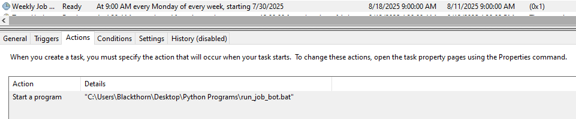

The 8‑Hour Bet
It started as a dare to myself: eight hours on the clock, zero “real” coding experience, and one ambitious goal—ship a working, fully automated job‑search bot. Sixty‑five minutes later, I was staring at my inbox… with a clean, formatted report of roles tailored to my skills and salary targets. The bot worked on the first run.
Constraint as a Superpower
I didn’t know Python beyond copy‑paste and curiosity. But the modern stack rewards a different muscle: delegation. Instead of brute‑forcing syntax, I broke the problem into small, testable steps and used AI prompting like a power tool. When I got stuck, I asked better questions—about logic, structure, and edge cases—then glued the answers together.
The Toolkit That Made It Click
I opened Visual Studio Code and built a minimal workspace. With AI as my copilot, I stitched together:
- Python for the scriptable glue and reliable libraries
- Open APIs & RSS feeds from job boards for public listings
- Local filtering to match skills and salary ranges
- Email automation to package results into a weekly digest
First pass, first win—clean, relevant listings delivered to my inbox.
Guardrails First: Automation With Respect
This wasn’t “scrape and pray.” I only touched public data and respected platform terms. No rate‑limit hammering, no TOS gray areas. If automation is going to earn trust, it has to behave like a good citizen.
The Build: From Noise to Signal
The first successful run felt like catching a wave. The bot:
- Fetched roles from multiple trusted sources
- Filtered locally by skills and salary targets
- Deduplicated the overlap across sources
- Emailed a clean, scannable report
Set It and Forget It
I wanted reliability, not another tool I had to babysit. So I wired it into Windows Task Scheduler to run weekly. Now, every seven days, I get a curated list of roles that actually fit.
Hands‑off consistency: a weekly run that keeps opportunity flowing.
The Payoff
By the end of day one, I wasn’t “learning to code”—I was shipping value. My inbox started delivering 70+ relevant remote roles weekly, ready to review and prioritize. No doom‑scrolling, no wasted clicks—just leverage.
What I Learned (That Isn’t Just “Coding”)
- Delegate to AI for speed, but keep the logic yours
- Use public data respectfully—trust beats hacks
- Filter locally to turn firehoses into streams
- Schedule it so the system works even when you don’t
The Future of Work, Today
This project wasn’t about flexing tools. It was about owning a problem and solving it with a modern toolkit. That’s the future of work: proactive, ethical automation that removes drudgery and amplifies focus.